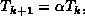
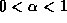
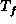
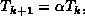
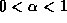
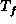

Data Structures and Algorithms
with Object-Oriented Design Patterns in Java
Data Structures and Algorithms
with Object-Oriented Design Patterns in JavaDespite its name, simulated annealing has nothing to do either with simulation or annealing. Simulated annealing is a problem solving technique based loosely on the way in which a metal is annealed in order to increase its strength. When a heated metal is cooled very slowly, it freezes into a regular (minimum-energy) crystalline structure.
A simulated annealing algorithm searches for the optimum solution to a given problem in an analogous way. Specifically, it moves about randomly in the solution space looking for a solution that minimizes the value of some objective function. Because it is generated randomly, a given move may cause the objective function to increase, to decrease or to remain unchanged.
A simulated annealing algorithm always accepts moves that decrease the value of the objective function. Moves that increase the value of the objective function are accepted with probability
where is the change in the value of the objective function and T is a control parameter called the temperature . That is, a random number generator that generates numbers distributed uniformly on the interval (0,1) is sampled, and if the sample is less than p, the move is accepted.
By analogy with the physical process, the temperature T is initially high. Therefore, the probability of accepting a move that increases the objective function is initially high. The temperature is gradually decreased as the search progresses. That is, the system is cooled slowly. In the end, the probability of accepting a move that increases the objective function becomes vanishingly small. In general, the temperature is lowered in accordance with an annealing schedule .
The most commonly used annealing schedule is called
exponential cooling .
Exponential cooling begins at some initial temperature,  ,
and decreases the temperature in steps according to

where .
Typically, a fixed number of moves must be accepted at each temperature
before proceeding to the next.
The algorithm terminates
either when the temperature reaches some final value, ,
or when some other stopping criterion has been met.
,
and decreases the temperature in steps according to

where .
Typically, a fixed number of moves must be accepted at each temperature
before proceeding to the next.
The algorithm terminates
either when the temperature reaches some final value, ,
or when some other stopping criterion has been met.
The choice of suitable values for ,  , and
is highly problem-dependent.
However, empirical evidence suggests that a good value for is 0.95
and that
, and
is highly problem-dependent.
However, empirical evidence suggests that a good value for is 0.95
and that  should be chosen so that
the initial acceptance probability is 0.8.
The search is terminated typically after some fixed, total number of
solutions have been considered.
should be chosen so that
the initial acceptance probability is 0.8.
The search is terminated typically after some fixed, total number of
solutions have been considered.
Finally, there is the question of selecting the initial solution from which to begin the search. A key requirement is that it be generated quickly. Therefore, the initial solution is generated typically at random. However, sometimes the initial solution can be generated by some other means such as with a greedy algorithm.
 Copyright © 1998 by Bruno R. Preiss, P.Eng. All rights reserved.
Copyright © 1998 by Bruno R. Preiss, P.Eng. All rights reserved.